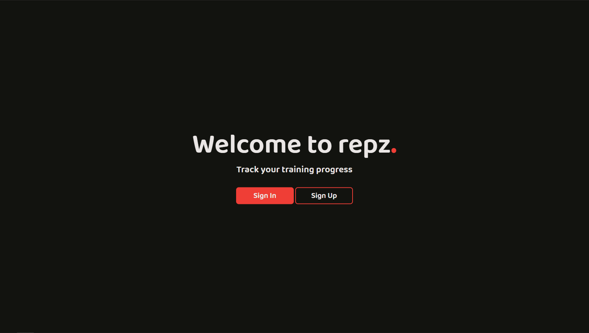

U današnjem tutorijalu, nastavićemo rad sa Djangom. Stilizovaćemo index stranicu i pošto će se na njoj nalaziti dugmad Sign Up ili Sign In, njih ćemo odgovarajuće linkovati ka novim stranicama.
Do sada imamo stranicu na kojoj samo imamo h1 naslov Index page. Pošto je poenta tutorijala Django, a ne HTML+CSS, neću ulaziti u to kako da stilizujete stranicu, okačiću svoj kod i izgled, pa ukoliko želite isto tako, kopirajte :)
Ono što se tiče Djanga jeste kako da linkujemo naše .css fajlove, slike ili bilo šta što nam je potrebno (ovo se zovu statični fajlovi) na stranici. U root direktorijumu, istom u kom su index i repz direktorijumi, pravimo direktorijum assets, a u njemu za sad samo direktorijum css i u taj direktorijum stavljamo fajl style.css.
U settings.py fajl dodajemo na dno fajla novu promenljivu STATICFILES_DIRS = (os.path.join(BASE_DIR), 'assets'). Šta radi os.path.join? Na BASE_DIR što je naš root direktorijum, dodaje 'assets' na putanju tako da će se statični fajlovi nalaziti na putanji BASE_DIR/assets.
U .html fajlovima statične fajlove učitavamo na sledeći način:
<link rel="stylesheet" href="{% static 'css/style.css' %}">
Nakon sređivanja, dobijamo:
Sada ćemo napraviti novu aplikaciju pod nazivom login_register koja će sadržati svu logiku i kod iza logovanja i registrovanja.
python manage.py startapp login_register
Napraviću malu digresiju, jer se sada pojavljuje više strana i samim tim se može desiti da se dosta koda ponavlja, što želimo da izbegnemo.
U templates direktorijumu ćemo napraviti još dve stranice, header.html i footer.html.
U header.html će ići sav kod pre otvarajućeg body taga (uključujući i njega) iz index.html, a u footer.html
sve posle zatvarajućeg body taga (uključujući i njega).
Sada će nam index.html izgledati ovako:
<div class="container"> <div class="row"> <div class="col-md-12 welcome-index"> <h1>Welcome to repz<b style="color: #ef3e36">.</b></h1> <h4>Track your training progress</h4> <br> <a href="login/"><button class="signin-button-index">Sign In</button></a> <a href="register/"><button class="signup-button-index">Sign Up</button></a> </div> </div> </div>
{% include 'header.html' %}, a na kraj strane {% include 'footer.html' %}.{%include 'header.html'%} <div class="container"> <div class="row"> <div class="col-md-12 welcome-index"> <h1>Welcome to repz<b style="color: #ef3e36">.</b></h1> <h4>Track your training progress</h4> <br> <a href="login/"><button class="signin-button-index">Sign In</button></a> <a href="register/"><button class="signup-button-index">Sign Up</button></a> </div> </div> </div> {%include 'footer.html'%}
Sada možemo da se vratimo na naše login.html i register.html strane. U ovom tutorijalu ću samo linkovati ka njima, a u sledećem ih dorađivati. Za početak, na stranama dodamo samo h1 naslov sa imenom strane, dakle Login page i Register page. U views.py fajlu u login_register direktorijumu pravimo funkcije:
def login(request): return render(request, 'login.html') def register(request): return render(request, 'register.html')
from django.urls import path from . import views urlpatterns = [ path('login/', views.login), path('register/', views.register) ]
Ovde ću stati, ako nešto ne radi slobodno mi pišite na Instagramu ili Facebooku. Kodove ovog tutorijala možete naći na GitHubu.
Uvod u Django 1.deoHvala što ste čitali, nadam se da je bilo korisno. :)